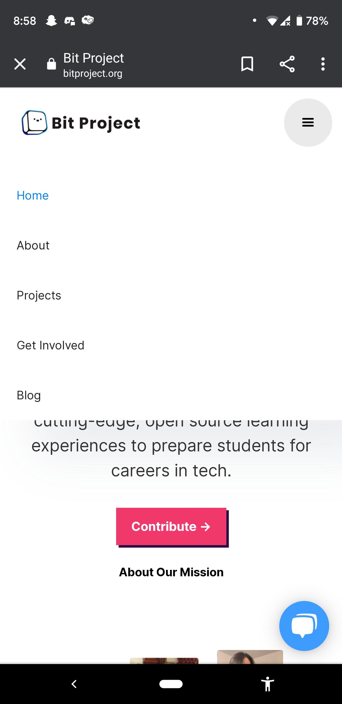
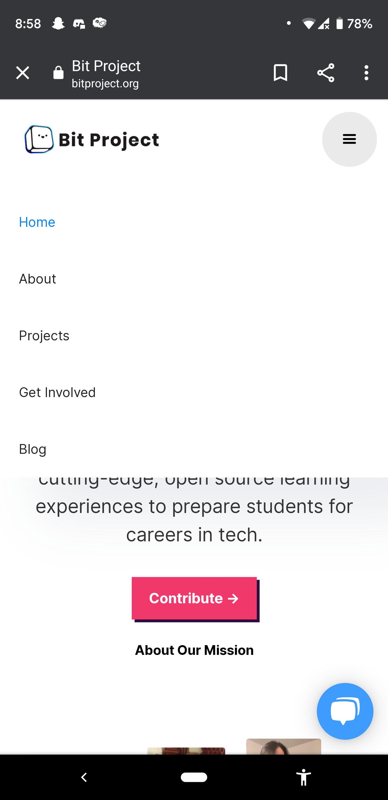

Web Design: Mobile VS Desktop
By Julia Ma
Bit Project
One page I decided to checkout is the Bit Project webpage, a student run non-profit which I work for. After looking at both desktop and mobile versions of the same page, I found that all the features you can see on the desktop can also be seen on the mobile version dispite the size change.
 

One way Bit Project was able to do so it hiding the navigation bar using the hamburger icon where as the desktop version displayed the navigation bar at the top. This trick for the moblie saved space and possible fustration from the visitor trying to press small buttons to use the navigation. I also found that it was smart to break up the centered words and images on the side in the mobile version. The desktop layout would have been way to crowded for the mobile version. This way, the aesthetics can stay while having a readable page.
Youtube

Another page I checked out is YouTube since I use the desktop and app version daily but have not really interacted with the mobile site.
I viewed both desktop and mobile versions without logging in and one of the first things I noticed is that the mobile version has way less tabs avliable for visitors
to explore whereas the desktop version has a whole side bar with recommended generes and such. This might be harder for visitors who are not logged in on the mobile site to explore
as many generes as a desktop user would although mobile still has access the the home page, trending, and library.
Another thing I noticed is that the mobile site really reminds me of the app version as there is the navigation bar on the bottom with the video thumbnails front and center, accessible with scrolling in the middle. This may be a good idea to keep consistency between mobile versions of the service.